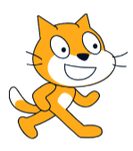

Updates
v1.0 - Script was published on this day. (January 29th, 2026)
v1.0.1 - The previous list bug is fixed. The user interface is changed. (February 18th, 2026)
v1.0.2 - The rotation is added!. (February 19th, 2026)
v1.0.3 - The "<clear 3D spin or outline>" script is renamed to "<clear pen and clones>". (February 20th, 2026)
v1.0.4: Redesigned the scratch cat. (21st February, 2026)

The scratch cat redesigned my me. Scratch cat belongs to Scratch Foundation and MIT
v1.0.5: Added a new feature for better user experience. It's sounds and costumes list (March 1st, 2025)